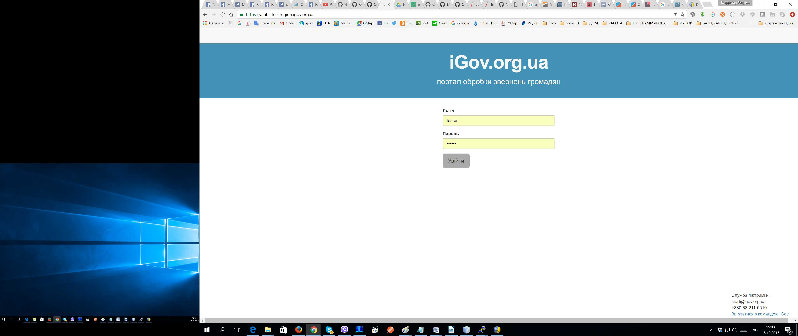

Открытая платформа iGov, для построения электронного правительства Украины!
Официальный сайт: https://igov.org.ua
Официальная документация: https://github.com/e-government-ua/i/wiki
- *.igov.org.ua и *.test.igov.org.ua - центральный портал, с полным каталогом, для гражданина
(Фронтэнд-NodeJS(client+server): /i/central-js) - *.igov.org.ua/wf и *.test.igov.org.ua/wf - центральная админка для админов, активити-эксплорер
(Бэкэнд-Java(+GWT-UI): /i/wf-central) - *.region.igov.org.ua и *.test.region.igov.org.ua - региональный портал, дашбоард/админка, для чиновника
(Фронтэнд-NodeJS(client+server): /i/dashboard-js) - *.region.igov.org.ua/wf и *.test.region.igov.org.ua/wf - региональная админка для админов, активити-эксплорер
(Бэкэнд-Java(+GWT-UI): /i/wf-region)
Региональный портал, дашбоард/админка, для чиновника - позволяет отрабатывать поступающие от граждан заявки.
Авторизация:

Закладка "Необроблені", со списком зажач для отработки и выбранная одна заявка с права, с полями:

При выборе заявки ее можно взять в работу, после чего она попадет в следующую закладку.
Закладка "В роботі", со списком зажач в работе и выбранная одна заявка с права, с полями:

При выборе заявки ее можно отработать, распечатать(в разных шаблонах), внести и отправить замечания гражданину а так-же загрузить прикрепленные файлы-атачи или проверить на них ЭЦП.
Вывод на печать одной из принтформ заявки:

Отправка замечаний гражданину, выбрав отдельные поля его заявки(внеся комментарий как по полю так и общий), с отправкой ему уведомления по почте, и возможностью внести уточнения в форму:

Просмотр итории диалога с гражданином по данной заявке:

Возможность загрузить прикрепленный к заявке файл:

Или проверить на нем ЭЦП:

Закладка "Расписание", со списком зажач по которым были зарезервированы имкеты Электронной Очереди: